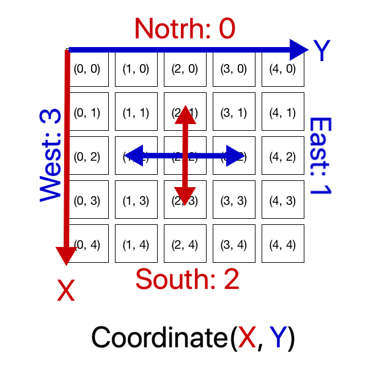

For milestone 3, the objectives are to successfully traverse the maze using one the following algorithms: DFS, BFS, Dijkstra, or A*, while also radio transmitting information about the maze in order to map it to a screen.
Considering that our objective in this competition is mapping much of the maze as possible, it wasn’t hard for us to conclude DFS is the best algorithm to complete this task.With DFS, our robot will continue along a path until it cannot continue, then backpropodate until it can see unexplored paths. This method is best for mazes with deep or circular branches, and weakest for those with a lot of dead-ends.
We first developed the pseudocode for the algorithm.
Stack s = {}
s.push(Node(0,0))
mapMaze()
while(s not isEmpty()){
// look at the top element w/o removing from stack and
// get its first available unexplored node (in right-to-left priority)
Node neighbor = getUnvisited( s.peek())
if (neighbor not NULL){ // if unexplored neighbor exists
// add the neighbor to stack and go to that neighbor/set explored
s.push(neighbor)
goTo(neighbor)
mapMaze()
}else{ // if unexplored neighbor does not exist
// remove a node from stack and go to the node on top of the stack
s.pop()
goTo(s.peep())
}
}
In order to turn a theoretically abstract idea to a functional algorithm, we had to start by creating supporting classes/data structures and functions executable by our Arduino robot.
Here is our Node class.
struct Coordinate{
Coordinate(int x, int y){this->x = x; this->y = y;}
int x, y;
};
Here is our Stack class that stores Nodes.
class Stack{
public:
void push(Coordinate c){
stack_x[i] = c.x;
stack_y[i] = c.y;
i = i+1;
}
Coordinate pop(){
if(i > 0){
i = i - 1;
return Coordinate(stack_x[i], stack_y[i]);
}
}
Coordinate peep(){
if (i > 0 ){
return Coordinate(stack_x[i-1], stack_y[i-1]);
}
}
bool isEmpty(){
return i < 1;
}
private:
byte stack_x [50];
byte stack_y [50];
byte i = 0;
};
To build on top of the Radio-Communication lab, we decided to keep the coordinate and relative cardinal orientation convention. We selected the cardinal direction method because it is conceptually more clear to debug.
We then had to implement unit-step movement functions such as those shown below:
/* Functional methods */
void updateOrientation(int turn);
void updatePos();
/* Does exactly what it says and updates orientation. */
void stopMoving();
void turnAround();
void turnRight();
void turnLeft();
boolean followLine();
/* Turns and follows the line until intersection is reached then stops. */
void goStraight();
void goLeft();
void goRight();
void goBack();
/* Given coordinate identify relative direction, go there and update position. */
byte getDirection();
void goToDir(int dir);
void mapMaze();
Once we tested each step-function independently, we implemented the full depth-first-search as follows:
/* Traverse the Map. */
void dfs(){
Stack s;
s.push(Coordinate(0,0));
mapMaze();
while(!s.isEmpty()){
Coordinate curr = getNotVisited(s.peep());
if ( curr.x != -1 && curr.y != -1 ) { // Curr x and y are -1 if there are no nodes to visit
s.push(curr);
goToDir(getDirection(curr));
mapMaze();
} else {
s.pop();
goToDir(getDirection(s.peep()));
}
}
}
Since we were confident in our DFS algorithm, we chose not to simulate the algorithm on a computer with randomly generate mazes. Rather, we implemented and tested our algo on the robot.
Here is our robot completing a 4x5 maze without mapping it.
Here's our robot traversing and mapping the maze in our base sation GUI.